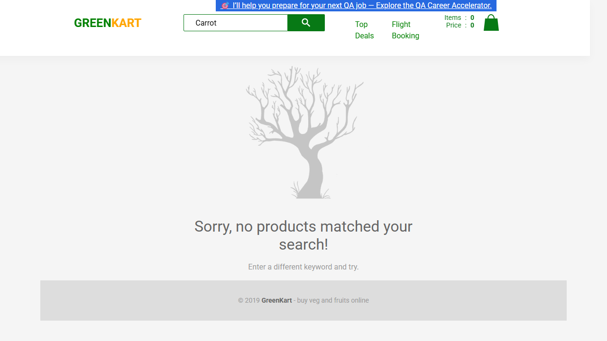
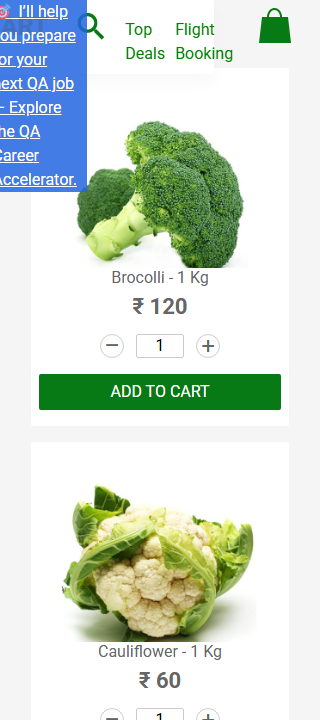

GreenKart Home Page Test Report
Playwright coverage for the homepage catalog, search, quantity controls, cart preview, accessibility, layout, and recovery.
Failed scenarios (7)
-
Failed
2.5 — Search with surrounding whitespace
Searching for
Carrotreturned no matching product. The search did not trim surrounding spaces.View failure screenshot

-
Failed
3.4 — Reject quantity 0
The quantity input retained 0 instead of correcting or rejecting it.
View failure screenshot

-
Failed
3.4 — Reject quantity -1
The quantity input retained -1 instead of correcting or rejecting it.
View failure screenshot

-
Failed
3.5 — Reject fractional quantity
The quantity input retained 1.5, although the expected quantity is a positive whole number.
View failure screenshot

-
Failed
4.8 — Prevent quantity 0 from entering the cart
Adding Apple at quantity 0 created a cart line instead of leaving the cart empty.
View failure screenshot

-
Failed
4.8 — Prevent quantity -1 from entering the cart
Adding Apple at quantity -1 created a cart line instead of leaving the cart empty.
View failure screenshot

-
Failed
5.2 — Use core controls at desktop, tablet, and mobile widths
At a 320px mobile viewport, the search control could not be found or reached by its accessible role and name. The responsive scenario timed out at this check.
View failure screenshot

Passed coverage (23)
Passed checks covered home-page/catalog rendering, product-card details, catalog browsing, exact/partial and case-insensitive search, no-results and clear-search behavior, quantity increment/decrement and recovery, valid quantity entry, cart totals and product removal, keyboard operations, desktop/tablet layout checks, and page reload recovery.
Run details and scope
This report reflects the latest recorded targeted run: 30 tests, 23 passed, 7 failed, Chromium, one worker. Failure screenshots were captured by Playwright and are expandable under each failed scenario. Tests were run against the public GreenKart demo homepage. Checkout and order submission were not performed.
Spec files: tests/green-kart-home/. Test plan: tests/green-kart-home-page.plan.md.